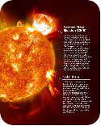

SolarShield — Space Weather Watch
Connecting…Monitor solar activity and explain how space weather can affect satellites, communications, and Earth's magnetic environment.
- Display solar flares and geomagnetic activity.
- Visualize space-weather alerts.
- Explain potential impacts on technology.
- Present historical solar activity graphs.
Categories: Sun, Space Weather, Satellites, Artificial Intelligence, Data Visualization, Education. Live data: NOAA Space Weather Prediction Center, NASA Solar Dynamics Observatory, NASA DONKI.
Space-weather conditions right now
In plain language
Automated summary written from the live numbers above. It describes current conditions and is not a forecast.
The Sun now NASA SDO
Image refreshed —. SDO updates roughly every 15 minutes.
Aurora forecast NOAA SWPC OVATION
Shows where the aurora may be visible in the next 30–90 minutes. A stronger geomagnetic storm pushes the glowing oval toward the equator.
Solar flares: X-ray flux (3 days)
GOES long-channel (0.1–0.8 nm). Each class is 10× stronger than the last: A, B, C, M, X.
Geomagnetic activity: planetary Kp (recent)
Kp 5 or higher is a geomagnetic storm (NOAA G1 to G5). Bars are 3-hour values.
Solar wind at L1 (last 24 h)
Speed (km/s) and the north-south magnetic field Bz (nT). A sustained negative Bz lets solar wind energy into Earth's magnetic field, which is the main driver of storms.
Space-weather alerts & warnings
Recent flares (7 days)
Peak class and time of each flare detected by GOES.
What this could mean for technology
Impacts based on today's NOAA scale levels, with the full ladder below for reference.
G · Geomagnetic storms
R · Radio blackouts (flares)
S · Solar radiation storms
Coronal mass ejections NASA DONKI · 7 days
CMEs are huge clouds of solar plasma. Only some are aimed at Earth; fast, Earth-directed ones cause storms 1–3 days later.
Loading…
Geomagnetic storms NASA DONKI · 60 days
Past storms with their highest observed Kp.
Loading…
Historical solar activity
Sunspot number from NOAA SWPC and the Royal Observatory of Belgium (SILSO). The Sun follows an ~11-year cycle. We are currently in Solar Cycle 25.
A sudden burst of light and X-rays. It reaches Earth in about 8 minutes and can disturb HF radio and GPS on the sunlit side.
A cloud of magnetized plasma thrown from the Sun. It takes roughly 1 to 4 days to arrive and can trigger geomagnetic storms.
A 0–9 measure of disturbance in Earth's magnetic field. Kp 5 equals a minor (G1) storm, Kp 9 an extreme (G5) one.
Fast charged particles from flares and CMEs. They can upset satellite electronics and raise radiation for crews at high latitudes.
Data: NOAA SWPC, NASA SDO, NASA DONKI. Values are provisional and can be revised. Timestamps are UTC.